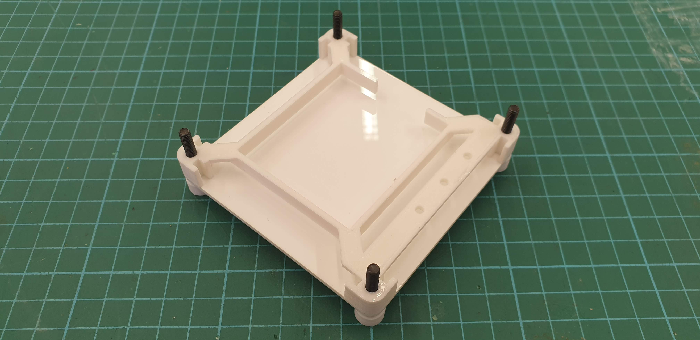

Final Project
Here is where I will be documenting the process of making my final project.
The purpose of this project is for me to integrate what I have learnt over
the course of this module which shall include 3D modelling with the used
of computer aided design softwares as well as parts to be fabricated with
machines such as the laser cutting machine and 3D printing machine. With
the time span of this final project only lasting for 3 week, I decided to
create something simple yet practical and it is simply titled as the
Macro Numpad.
What does it do?
The Macro Numpad is simply what is named, it acts as a numberpad as
well as a macro pad which have mapped keys to assist the user with work
and help to make the use of editing softwares much easier and
efficient. It has a total of 2 layouts, and 1 default layout which is the
number pad, you can be toggle between the layouts at any time. This
device can be plugged into a desktop, laptop or any device that has the
USB type A port and to the Macro Numpad through a micro USB cable. The
Macro Numpad can then be used on that connected device.
What are it's features?
Some of the features of the Macro Numpad include:
4x4 membrane keypad with 2 layouts and default number pad:
- Default layout: Number pad
- Layout 1: Editing functions(select all, cut, copy, paste, undo, redo, snip, save)
- Layout 2: Discord funstions(server cycling, channel cycling, mute, deafen, share your screen)
3 available LEDs lights up to indicate the current layout of the 3 mapped layouts
Research
After doing some research to get some inspiration and ideas of how I
shall design the product, I was curious to see if there is anyone who
did something similar to how I am wanting to make my product. To my
surprise, there is someone who took this module in 2021 semester 1, he
goes by the name of Lynn, who did a RGB macropad which is something
similar to what I have been wanting to make.
The main features for his
macropad are some basic functions such as editing and media functions, as
well as toggleable RGB lighting. The design of his macropad is also
really compact and smart, such as the 3D printed RGB support acting as
the support for the RGB light strip, a mount for the keypad as well as
slots to install the side plates. He also made a mount for his Arduino
micro-controller not only to fix the micro-controller in place, but also
to protect the input port of the Arduino board. With all these positives
of Lynn's design, I would like to incorprate them into my product as well
and I hope that he would not mind. Click this
link to visit
his website to learn more about how he did his RGB macropad and to give
credit for his work.
Rough Sketch
What will be made?
| CAD Design, Graphics |
Side panels, top plate, base plate, back plate, keypad plate,
keypad support frame, spacers, LED mount, Pro Micro mount, feet |
| Laser cutting |
Side panels, top plate, base plate, back plate, keypad plate |
| 3D printing |
Keypad suppport frame, spacers, LED mount, Pro Micro mount, feet |
| Micro-controller |
Arduino Pro Micro |
| Input devices |
4x4 Membrane Keypad |
| Output devices |
Desktop, laptop and LEDs |
Bill of materials
| S/N |
Quantity |
Item Description |
Approx. Cost |
| 1 |
1 |
Arduino Pro Micro |
$8 |
| 2 |
3 |
LEDs(White) |
$2.50/50pcs |
| 3 |
3 |
220 Ohm Resistor |
FabLab |
| 4 |
1 |
4x4 Membrane Keypad |
$1.05 |
| 5 |
1 |
3mm Acrylic sheet(White) |
Fablab |
3D modelling
With reference to Lynn's design, I incorprated a mount for the LEDs on
the right side of the keypad, with each LED aligning with the corresponding
layout buttons. Also, knowing that the 3D printed parts will shrink in
size due to contraction after cooling, I made sure to leave at least a
0.2mm clearance for any slide fit.
3D model
3D printed parts
Print Settings (For keypad support frame, spacers, LED mount and feet)
Print Settings (For pro micro mount)
These settings are only for the pro micro mount since the print requires
supports to 3D print it successfully.
Successfully 3D printed parts

Here are all the 3D printed parts successfully printed.
Laser cut parts
Successfully laser cut parts

Here are all the laser cut parts successfully cut.
Electronics
Wiring Diagram
Soldered Arduino pro micro
Here is how the soldered Arduino looks. As you can see, I did not
solder the LED directly to the resistor and ground wires due to the
need to assemble the LED mount first before connecting the LEDs. Instead,
I made use of female connecting wires to act as connecting ports to connect
the LEDs later during assembly.This also acts as future proofing where
if one of your LEDs might not be working, you can just disconnect the
wires and replace the LED instead of having to resolder everything.
Arduino IDE code
Here I included two libraries, Keypad.h by Mark Stanley and Alexander Brevig
and Keyboard.h by Arduino. The Keypad.h library includes functions that
allow me to incorprate the 4x4 matrix keypad while the Keyboard.h library
allows me to do keyboard functions.
Click this
link
to learn more about the various funtions for the Keypad.h library.
And click this
link
to learn more about the various funtions for the Keyboard.h library.
With the Keypad.h library installed, here is how you would define your
4x4 matrix keypad.
From this set of codes, the .getKey gets the key that is pressed on the
keypad. This then allows for the case 'key' to do a digital.write('-')
where - is the keypad number pressed. Here you can replace the '-' in
digital.write('-') to any set of characters that you may want to type,
in a way it kind of acts like a Serial.println().
From this set of codes, instead of using digital.write('-') to do an
character output, in this case I used digital.press('-') to do key presses
of key from your keyboard. This function allows you to do digital presses
of any key on your keyboard and '-' can be modified to any modifier key.
Click this
link
to see the list of modifier keys available. Do take not that when you
do a digital.press('-'), the key assigned will continuously be pressed
until you do a digital.release('-').
Fully completed code
Click
here to
download the full code and modify it to your liking for your own Macro
Numpad.
Full assembly
Step 1

Take 2 M3x10 screw, 2 M3 Nut, 2 M3 washer, back plate and Pro Micro mount.
And assemble them like so, with the washer and nut screwed onto the screw
on the other side. When this is done, you can snap your arduino pro micro
into the mount.
Step 2
Take 4 M4x25 screw, 4 foots and the base plate.
Here I slide fit the foot to the head of the screws and put them through
the four holes of the base plate.
Step 3
Take your base plate assembly and keypad support frame.

Assemble them like so. Here any oriantation is fine since the base plate
is symmetrical.
Step 4

Take your arduino pro micro assembly and main assembly.
Slide the back plate of the pro micro assembly into the back slots of
the support frame as such. Here you might also want to do some wire
management so that you would not get them mixed up when connecting up
your other electrical components in the next few steps.
Step 5
Take your LED mount and 3 white LEDs.
Slide the LEDs into the holes of the LED mount like so. Do ensure that
the side of the LED mount with the step is the side that you put the LED
through such that the bottom side of the LED is flush with the LED mount
surface.
Step 6
Take your main assembly and LED assembly.
Put the LED anode and cathode through the support frame hole and assemble
the LED assembly like so on the right side of the support frame.
Now you can connect up the LEDs to your arduino to the correct ports,
do refer back to the wiring diagram for reference.
Step 7
Take the 2 spacers.
And assemble them to the two screws on the left side of the main assembly,
the side without the LED mount.
Step 8
Take your 4x4 matrix keypad and slide it through the support frame of
the main assembly like so.
Now you can connect up the keypad to the arduino. Make sure you know the
orientation of the keypad ports to connect them correctly. Refer back to
the wiring diagram for reference.
Step 9
Take the side plates and your main assembly.
Slide the plates into the slots of the support frame slots like so. You
might shift the keypad out of the way to slide the plate into the front
slots.
Step 10
Take the top plate, 4 M4 washers, 4 M4 nuts and your main assembly.
Fully assembled
Put the keypad into place on the support frame and assemble the top plate
with the four corner holes through the screws as such and tighten the
whole thing with the washer and nuts. And finally, you have successfully
fully assembled your very own Macro Keypad.
Things to improve on
First thing I would like to improve on the design is that despite having
a 0.2mm allowance for slide fits, lots of the parts are very hard to
slide into place, therefore I would like to maybe increase the allowance
to 0.4mm to allow for easier fit when assembling.
Second thing I would like to improve on are the fitting of the spacers
for the keypad, currently the keypad does slide around due to extra
spaceing between the spacers and the keypad and by reducing the gap, it
will prevent the keypad from sliding too much.
Last thing I would like to improve on is the feet, currently the all the
feet are slide fitted onto the head of the screw which was not the
original intention as it was originally suppose to be screwed between the
screw head and the base plate. To improve on this, the feet should be
made bigger such that it can fit onto the head of the screw better.
Conclusion
After completing this final project, I have come to the end of this
course, EP1000. Over the course of this final project, I learnt how to
implement and make use of the skills and softwares I learnt throughout
the whole course to create a working prototype. I personally feel that
the skills and knowledge I obtained here are benefitial to me as it made
me see another aspect of how to go about creating a prototype, not only
that, the operation of machines such as the 3D printer and laser cutter
to digitally fabricate parts made me see how efficient making a component
can be and are useful skills to have when I do operate such machines in
future. However, the downside of the final project is that I find myself
lacking the time to complete the project to my expectations, this could
be mainly due to my poor time management and prioritisation though it
could also be due to the project deadline is in the mids of my examinations
and one thing I would like to do better is probably work on this final
project slightly earlier. All in all, I enjoy my time during this course
and would recommend it to someone who has the interest of fabricating
your own product or simply likes to create something as I genuinely think
that this is the course for you.
References

{kind=link}
{kind=link}
{kind=link}
{kind=link}
{kind=link}